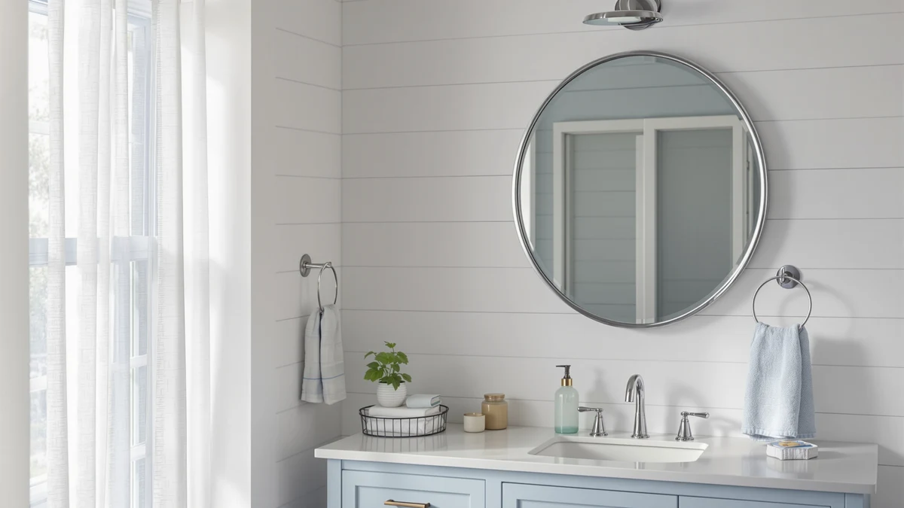

Things to Know Before You Buy
- Finish is the frame, not the glass. When people talk about a mirror finish, they mean the color and texture of the frame and edge: brushed nickel, matte black, polished chrome, brass, or a clean frameless edge.
- Match the tone family, not the exact metal. Keep your mirror, faucet, and lighting in the same warm or cool group. You do not need every piece to be identical.
- Texture beats shine for low maintenance. Brushed finishes hide water spots and fingerprints. Polished chrome and matte black look sharp but show every smudge.
- Frame material decides how long it lasts. Aluminum and powder-coated steel survive humidity. Thin painted iron can rust at the corners.
- Budget range is wide. A solid framed bathroom mirror runs $40 to $130. You pay more for thicker frames, beveled glass, and brand-matched hardware.
Picking a mirror finish comes down to one question you can answer in a few minutes: what color and texture should the frame and edge of your bathroom mirror have? Most shoppers stall here because the product listings throw around words like brushed, polished, satin, and anodized without saying what any of them mean for daily life.
You care about three things. You want the mirror to fit the metals already in your bathroom, you want it to stay clean without constant wiping, and you want a frame that does not corrode after a year of showers. Those three goals point you to the right finish faster than any trend roundup.
Below, I cover what a finish actually is, the main types you will see online, how to pick one for your room, the mistakes that send people back to the return desk, and how to keep your finish looking new. By the end you will know which one suits your space and why.
What You Need to Know
The finish describes the surface treatment on the frame and the visible edge of the mirror, not the reflective glass itself. The glass in nearly every bathroom mirror is the same float glass with a silver backing. The finish is the part you choose: a brushed metal frame, a glossy chrome border, a matte black rim, or no frame at all.
A finish does two jobs. It sets the visual tone of the room, and it determines how the mirror holds up to moisture and cleaning. A brushed nickel frame reads soft and neutral, while matte black reads modern and graphic. Both can look great. The difference shows up in how each one ages and how much wiping you do.
Two terms trip people up. Brushed means the metal has fine directional lines that scatter light and dull the shine. Polished means the metal is buffed to a mirror-like gloss. Brushed surfaces forgive fingerprints and hard-water spots. Polished surfaces look striking under vanity lights but reveal every drop and smudge.
Once you understand that a finish is the frame treatment plus its durability, the rest of your decision gets straightforward. You are matching a tone and choosing a maintenance level, not decoding marketing words.
Types and Categories
Most of the mirror finishes you will compare fall into five groups, and knowing them turns a confusing product page into a quick sort.
Brushed nickel. The most popular bathroom finish in US homes. It carries a soft silver-gray tone with a satin texture that hides marks. It pairs with almost any tile or paint color, which makes it the safe default if you are unsure.
Matte black. A flat, non-reflective black that suits modern, industrial, and farmhouse rooms. It frames a mirror with strong contrast against light walls. Dust and toothpaste flecks show against the dark surface, so it needs more frequent wiping.
Polished chrome. A bright, cool, high-shine silver. It feels clean and classic, and it bounces a lot of light around a small bathroom. The trade-off is water spotting, since every droplet leaves a visible ring.
Brass and gold. Warm finishes that range from shiny polished brass to soft brushed gold. They add a richer, more decorative look and pair well with cream, navy, and warm wood tones.
Frameless and beveled. Here the finish is the glass edge itself, either a clean flat polish or an angled bevel that catches light. Frameless mirrors suit minimalist rooms and make a small wall feel larger. Here the edge quality matters most, since there is no frame to hide a rough cut.
How to Choose
Once you know the five families, you can narrow your choice with four checks that take about ten minutes.
Start with the metals you already own. Walk into your bathroom and look at the faucet, the towel bar, the shower trim, and the cabinet pulls. Whatever tone dominates should guide your mirror. If your faucet is brushed nickel, a brushed nickel or matte black mirror blends in cleanly. If your fixtures are warm brass, lean toward a gold or brass frame. You are matching a temperature, warm or cool, more than an exact metal.
Factor in how much you clean. If you wipe your bathroom once a week and want it to look tidy in between, choose a brushed finish that hides spots. If you keep a squeegee in the shower and enjoy a spotless room, polished chrome or matte black will reward the effort with a sharper look.
Size the frame to the wall. A thin frame or a frameless edge keeps a small bathroom feeling open. A thicker, darker frame anchors a large vanity and stops a big mirror from looking like a floating sheet of glass. Hold a piece of cardboard the planned size on the wall before you commit.
Set a realistic budget. Expect $40 to $70 for a well-made framed mirror in a standard size, and up to $130 for larger arched pairs or brand-matched hardware. Spending more buys a thicker frame, better corner joints, and a finish that resists chipping, not a different reflection.
Run those four checks and one or two finishes will stand out as the obvious fit.
Common Mistakes to Avoid
A few errors send mirror finishes back to the return desk, and you can sidestep all of them once you see them spelled out.
Mixing warm and cool tones by accident. The most frequent miss is a cool chrome faucet under a warm brass mirror, or the reverse. The room ends up feeling slightly unsettled even when each piece looks fine alone. Pick a side and stay there.
Judging the finish from a phone screen. Brushed nickel, satin chrome, and brushed silver look identical in thumbnails but differ in person. Order one mirror first or check return policies before you buy a matching set you cannot inspect.
Ignoring the frame material. A finish can look perfect and still fail if the frame underneath is thin painted iron. Within a year the corners can bubble and rust in a steamy room. Read the spec line for aluminum, stainless steel, or powder coating.
Buying matte black for a low-effort bathroom. Matte black photographs beautifully, then shows toothpaste spray and dust the moment real life starts. If you will not wipe it down often, a brushed finish keeps you happier.
Forgetting the lighting. A finish shifts under warm versus cool bulbs. Check your mirror choice against the actual color temperature of your vanity lights, not the showroom.
Care and Maintenance
Keeping mirror finishes looking new takes little effort once you match the cleaning method to the surface. The glass and the frame want different treatment, and a few minutes a week protects both.
Clean the glass with a microfiber cloth and a vinegar-and-water mix or a streak-free glass cleaner. Spray the cloth, not the mirror, so liquid never runs down into the frame joints where it can sit and cause corrosion.
Wipe the frame separately with a soft dry or barely damp cloth. Skip abrasive pads, scouring powders, and ammonia-heavy sprays, since these dull a brushed texture and can strip a powder-coated finish. For matte black and polished chrome, a quick daily pass with a dry cloth removes the water spots before they set.
Humidity is the real enemy of any frame. Run the bathroom fan during and after showers, and crack the door so steam clears. Mirrors mounted on an exterior wall in a windowless bathroom corrode fastest, so dry that spot more often.
If you see early spotting at the corners, treat it quickly. Dry the area, then apply a thin coat of car wax or a clear metal sealant to the frame edge to slow further moisture damage. Keep that up and a quality finish stays sharp instead of dulling at the corners after one humid winter.
Our Top Picks
To turn the finishes above into real shopping options, here are three bathroom mirrors at fair prices, each a different tone and budget so you can see how the theory looks on an actual wall.

Editor’s Pick
LOAAO 24X36 Inch Brushed Nickel
The brushed nickel frame is the safest finish for most bathrooms. It hides water spots, matches almost any fixture, and the soft satin texture stays clean-looking between wipes.
$69.99
Check Price on Amazon
Best Value
LOAAO 22"X30" Black Rectangle Bathroom
A matte black finish at a budget price. The slim frame gives modern and industrial rooms strong contrast, and at $39.99 it is an easy way to test the look before committing to a whole set.
$39.99
Check Price on Amazon
Premium Choice
Delma Wall Full Length Mirror
A full-length mirror with a thin aluminum frame that resists humidity. The minimal edge keeps the focus on the glass and works as a large-format finish for bathroom and dressing areas alike.
$39.99
Check Price on AmazonFrequently Asked Questions
Does the mirror finish need to match my faucet?
It helps, but you do not need an exact match. Stay in the same family of tones, either warm finishes like brass and gold or cool finishes like chrome, brushed nickel, and matte black. Mixing a warm faucet with a cool mirror frame is the most common reason a bathroom looks slightly off.
Which mirror finish hides water spots and fingerprints best?
Brushed nickel and brushed brass hide marks best because their textured surface scatters light and breaks up smudges. Polished chrome and matte black show water spots and dust the fastest, so plan on wiping them more often if your bathroom gets steamy.
Will a metal frame rust in a humid bathroom?
A quality powder-coated or anodized aluminum frame resists rust for years, even in a bathroom without a window. Cheaper iron frames with a thin paint layer can corrode at the corners where moisture collects. Check the listing for aluminum, stainless steel, or powder-coated construction before you buy.
Is a frameless mirror a good choice for a small bathroom?
Yes. A frameless or thin-edge mirror keeps a small wall feeling open because nothing visually boxes in the glass. Look for a clean polished or beveled edge, since with no frame to hide a rough cut, the edge quality is the whole finish.
Is matte black going out of style?
Matte black has held steady as a mainstream bathroom finish for several years and shows no sign of fading. It reads modern without being trendy. If you worry about longevity, keep your walls and tile neutral so the black frame stays the one bold element you can swap later.
Verdict
From frame to edge, your choice comes down to tone and upkeep. Match the warm or cool temperature of the fixtures you already own, then pick a finish that fits how often you clean. Brushed nickel stays the smart default for most bathrooms, and the LOAAO 24X36 Inch Brushed Nickel mirror shows why: it hides spots, suits nearly any room, and costs a fair $69.99. If you want a modern, high-contrast look and do not mind wiping it down more often, matte black delivers, and the budget LOAAO black rectangle lets you try the style without a big outlay. For a minimalist room, a frameless or beveled edge keeps the wall feeling open. Match the finish to your metals and your cleaning habits, and it will still look right long after you have stopped thinking about it.